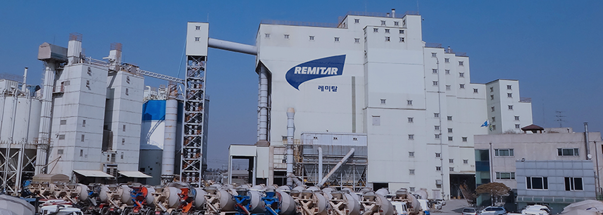

> 사업소개 > 레미탈
Remitar레미탈
국내 드라이 모르타르 대표 브랜드, 레미탈
레미탈은 시멘트·모래·특성개선제를 공장에서 정밀하게 계량·혼합해 만드는
한일시멘트의 드라이 모르타르 브랜드입니다. 현장에서는 자동화된 믹서와 펌프로
물만 더하면 바로 시공할 수 있어, 균일한 품질과 편리한 시공성을 동시에 확보합니다.
현장에서 직접 시멘트와 모래를 배합하던 기존 방식과 달리, 레미탈은 공장에서
정확한 배합비로 미리 계량·혼합되기 때문에 시공 편차 없이 균일한 품질을 유지할 수 있습니다.

필요한 레미탈 제품을 찾아보세요
제품명이나 용도를 입력하면 60여 종의 레미탈 제품 중 원하는 것을 빠르게 찾을 수 있습니다.
검색 결과 8개 제품
검색 결과가 없습니다.
업계 유일의 전국망, 시장을 개척한 기술력
-
1991
국내 최초 드라이몰탈 시장 개척
한일시멘트는 1991년 국내 최초로 드라이몰탈 시장을
개척했으며, 지속적인 투자와 개발로 시장 저변 확대에
앞장서고 있습니다. -
5개 권역
업계 유일의 전국 판매망
수도권(인천·부천)·강원권(여주)·충청권(공주)·
호남권(목포)·경상권(가야·함안)까지, 업계 유일의
전국 공급망을 갖췄습니다. -
특허 Silo
차별화된 고객 지원 서비스
정량배합 특허 Silo 제공, 균열 보수, 기술 영업 지원 등을
통해 현장의 신뢰를 쌓아가고 있습니다.